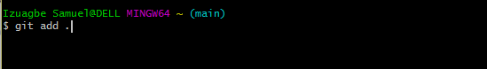
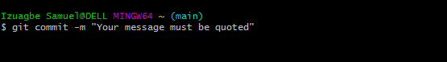
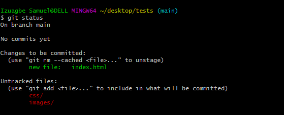
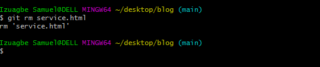
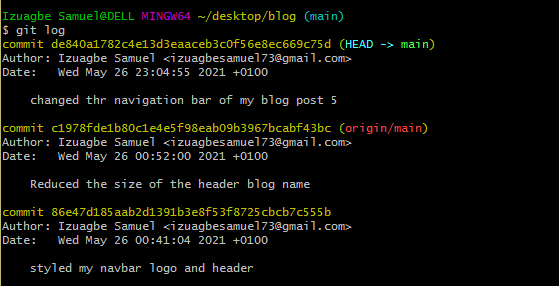
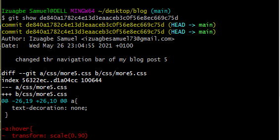
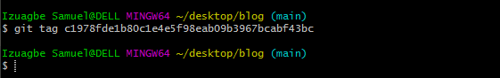

×
30minutes read
Share this article
Date published - April 23, 2021
April 23, 2021 | By Izuagbe Samuel
GitHub is a trending and a very popular public gathering for Developers. It's where millions of developers contribute to the future of software, contributing to the open source of millions of public and private codes. Using Git Bash as an application for Microsoft Windows environment to make changes to you GitHub account.
Is a command prompt navigator or a control system that allows users to navigate through your system to make files, remove files, make a directory, and take snapshot of our codes to GitHub.
In this blog I'll be talking about various Git commands:
We'll also deal with some commands that helps us navigate through the computer:
This command sets the author name and email address globally when commit.
Command Line: git config --global user.name "[name]"
Command Line: git config --global user.email "[email]"
When we commit our codes, (I know you're wondering what commit is we'll talk more about it later in this blog) we want our names or credential to be authored by us. git config sets our names and email to be the author of any code we commit.

This command is used to start a repository. Using git init means initializing the git files in you directory or folder when starting a repository.
Command Line: git init

This command add a file to the staging area. This is normally done after you might have edited that file.
Command Line: git add [file name]

Command Line: git add .
This command adds more than one files to the staging area
This command records or snapshots the file permanently in the version history.
Command Line: git commit -m "[Your commit message goes here]"
This command list out all the files that have been committed.
Command Line: git status
This command deletes the file from your working directory and stages the deletion.
Command Line: git rm [file name]
This command is basically used to list the version history for the current branch. It also shows the date, time, author, branch, and the commit message you made.
Command Line: git log
This command shows the changes of the specified commit and the metadata.
Command Line: git show [ The commit you made ]
This command lists all the local branches in the repository.
Command Line: git branch
.png)
This command creates a new branch.
Command Line: git branch [ Branch name ]
.png)
This command deletes a branch.
Command Line: git branch -d [ Branch name ]
.png)
This command is used to sign in from one branch to another.
Command Line: git checkout [ Branch name ]
.png)
This command creates a new branch and also switches to it.
Command Line: git checkout -b [ Branch name]
.png)
This command is used to give tags to the specified commit.
Command Line: git tag [Commit ID]
